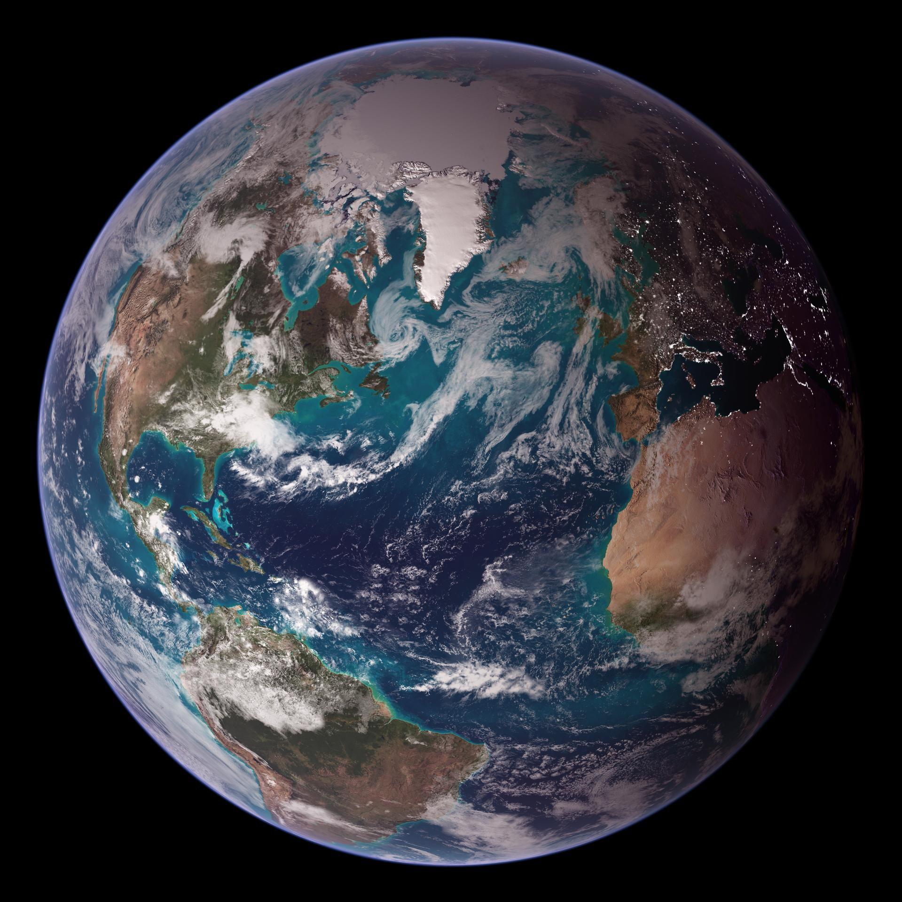
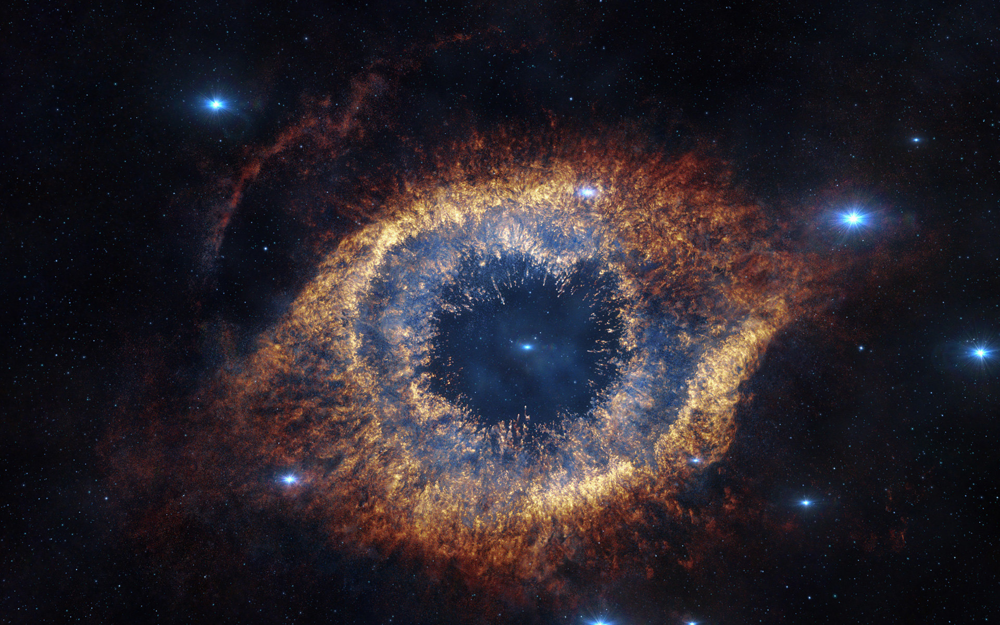
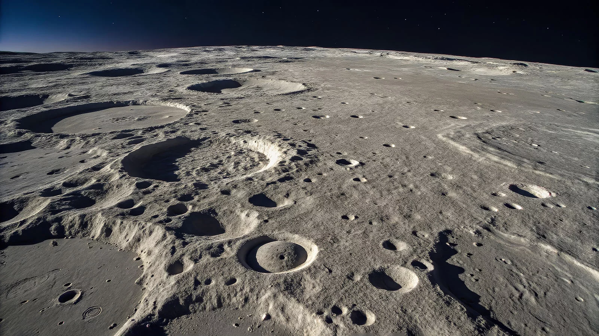

Космическая галерея
Небольшая подборка фотографий о планетах и далёких мирах.

Голубой мир
Планеты могут сильно отличаться друг от друга: одни покрыты облаками и океанами, другие — льдом, камнями или плотной атмосферой. Наблюдая за ними, учёные сравнивают разные условия и ищут ответы на вопросы о формировании планетных систем.

